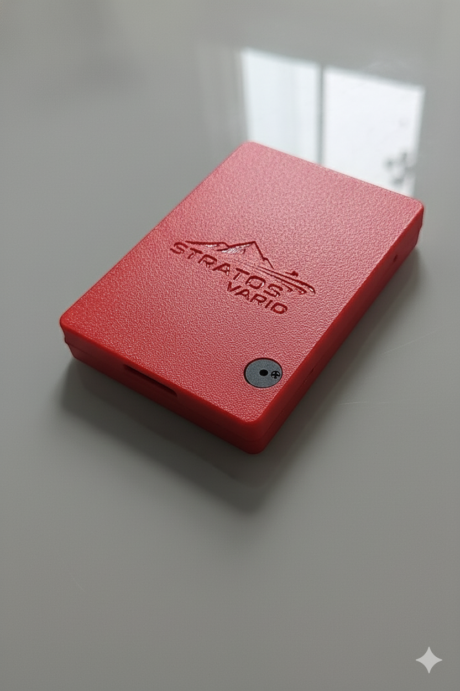
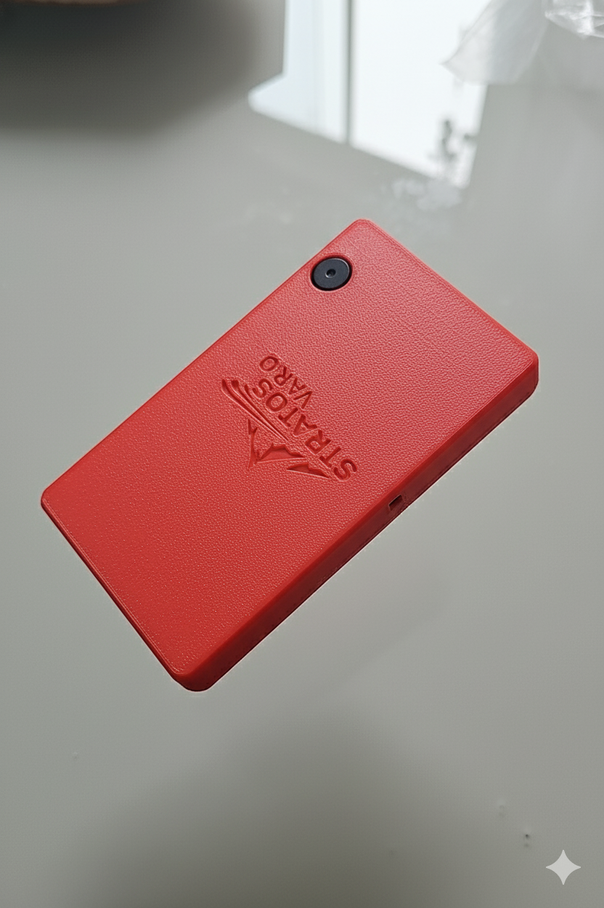
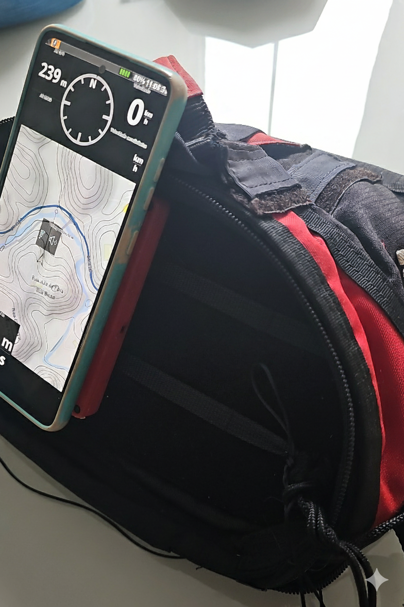

Stratosvario na Mão
Detalhe do Buzzer
Placa e Conectores
▶️ ASSISTA A DEMONSTRAÇÃO COMPLETA
Clique na imagem para iniciar o vídeo.
🧠 RECURSO CENTRAL: O FILTRO STRATOSSENSE AI & COCHLEAR
Desenhado para eliminar o ruído turbulento de borda de térmica e a trepidação, o Stratosvario\_box utiliza um algoritmo de **Inteligência Artificial (AI) proprietário** que atua como um filtro adaptativo.
Filtro Coclear (Zero Fadiga e Alto Desempenho)
O Filtro Coclear simula o processamento do ouvido humano, concentrando-se na detecção de padrões reais e ignorando as altas frequências da turbulência. **Enquanto variômetros comuns adicionam mais de 1.2 segundos de lag com filtros de software**, nossa abordagem garante uma resposta quase instantânea, com um lag mínimo **inferior a 0.02 segundos**.
Isso significa que você escuta a térmica no momento exato em que a cruza, eliminando a confusão e a fadiga auditiva. **O som do seu vário nunca foi tão limpo e imediato.**
Adaptação Dinâmica
O StratosSense AI **analisa a turbulência e a pureza da ascensão no ambiente de voo atual**, adaptando instantaneamente a suavização. Garante máxima sensibilidade no ar calmo e a estabilidade necessária no núcleo da térmica.
Modo Profissional
Mantenha o filtro AI desligado e ajuste a **Suavização Manual de 0 a 10** (0 = Rápido / 10 = Lento) através da interface web para controle total sobre a filtragem.
⚙️ TECNOLOGIA E PERFORMANCE
CONCEITO BOX MODULAR E ULTRAFINO
O Stratosvario\_box foi concebido com uma **espessura de apenas 13mm** (11cm C x 8cm L), otimizado para ser **colado com velcro diretamente ao seu celular ou tablet**. Isso cria um único aparelho, ultrafino, que ocupa o mínimo de espaço no porta-instrumentos.
Garante facilidade na troca da tela (celular/tablet) e total liberdade para migrar para um aparelho maior, sem trocar seu vário.
Sensor DPS310 (Baixo Ruído)
Comparado aos sensores BMP280, o DPS310 oferece **maior precisão** (**2cm de precisão** contra **10cm** dos filtros usados no mercado) e, crucialmente, um **ruído muito mais baixo**. Isso se traduz em bipes iniciais mais rápidos e informações mais limpas para o Filtro AI processar.
Processador Dual Core
Equipado com o microprocessador **Tensilica Xtensa LX6 Dual Core**, que oferece o desempenho necessário para executar o Filtro AI, o processamento do sensor DPS310 e a transmissão BLE simultaneamente.
💻 DEMONSTRAÇÃO INTERATIVA: A SUA CENTRAL DE COMANDO
Experimente a facilidade e o controle de configurar seu Stratosvario\_box via Wi-Fi, sem a necessidade de instalar aplicativos.
🔊 CONTROLE DE ÁUDIO E CUSTOMIZAÇÃO
O som é a sua segunda visão. Personalize cada detalhe da sua experiência sonora para máxima eficiência no voo.
Estúdio de Som Integrado
Ajuste milissegundo a milissegundo a duração do **beep** e do **silêncio** para cada etapa da razão de subida **um nível interpolável** através da interface Wi-Fi dedicada. Nunca mais voe com um vário que você não pode calibrar.
Perfis de Áudio Selecionáveis
- **Stratos Dinâmico (Recomendado):** Curva profissional ajustável.
- **Clássico Suave:** Curva linear padrão para familiarização.
- **Modo Iniciante:** Limiares mais altos para evitar sobrecarga de informação.
🛠️ ESPECIFICAÇÕES TÉCNICAS
| Processador | Tensilica Xtensa LX6 Dual Core |
|---|---|
| Sensor Altimétrico | Adafruit DPS310 (Baixo Ruído, Precisão de 2cm) |
| Comunicação | Bluetooth Low Energy (BLE) / Wi-Fi (Configuração Web) |
| Protocolo de Saída | LK8EX1 (Compatível com XCTrack, XCSoar, etc.) |
| Dimensões (LxCxE) | 8 cm x 11 cm x 13 mm (Design Modular Ultrafino) |
| Autonomia (BLE Ativo) | 15 - 19 horas contínuas (com bateria de 1100 mAh) |
| Carregamento | USB-C (Carregamento Universal 5V) |
| Modo Repouso | Consumo Ultrabaixo (Deep Sleep) |